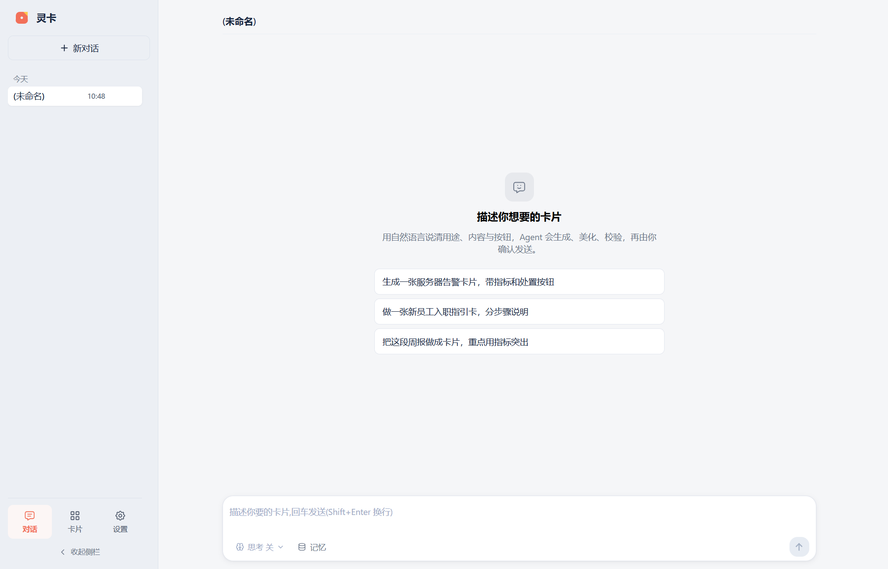
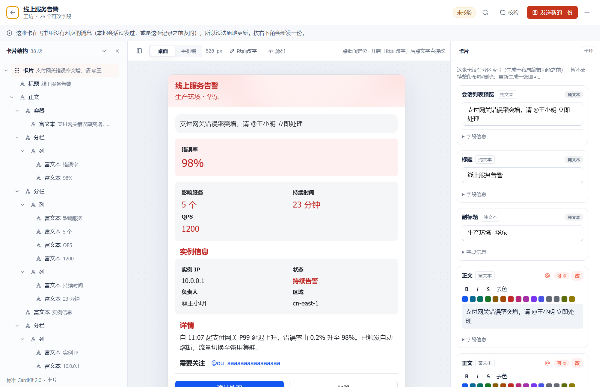
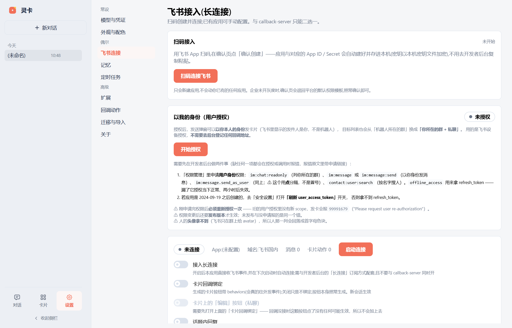
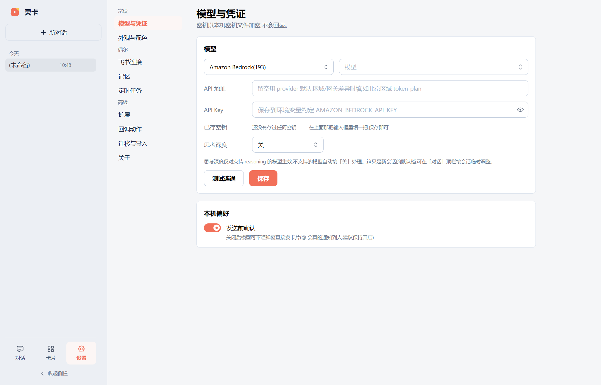
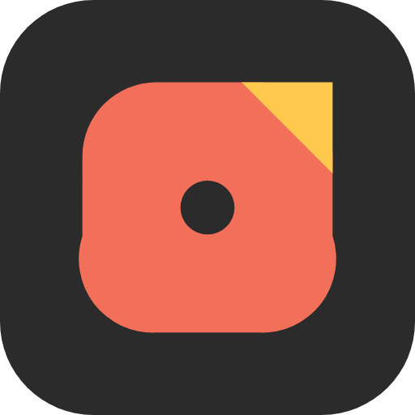

懂版式，不只会拼 JSON
色板、间距、字号、按钮和栏数都有规则。最多 3 栏、按钮不超过 3 个，色板来自 15 个色族 × 11 个明度档——不是随手写颜色。
色板 · 间距 · 栏数为什么是灵卡
飞书卡片有真实的版式规则。灵卡把它们写进生成链路，也写进 lint——所以卡片先像设计过，再谈生成。
色板、间距、字号、按钮和栏数都有规则。最多 3 栏、按钮不超过 3 个，色板来自 15 个色族 × 11 个明度档——不是随手写颜色。
色板 · 间距 · 栏数生成 → 润色 → lint → 发送，lint 不通过就发不出去。发送前还有内容账本校验，防止卡片在最后一刻被静默改写。
生成 → 润色 → lint → 发送按钮、表单、@ 的回调经飞书长连接回到会话。定时任务到点自动发，像同事一样继续处理，而不是发完就消失。
按钮 · 表单 · @ 回调卡片资产
转发进来的、对话里存下的、编辑器里保存的，都在同一处。下次要做一张类似的卡，直接拿它当底子，不用从零描述版式。
把飞书里的卡片转发给灵卡机器人，它读原始卡片、存进资产库。顶栏的「自动入库」和设置页是同一个开关，关掉就不再收。
列表带来源、保存日期和 schema 版本，按名称或标签过滤。转发导入、对话收藏、编辑器保存，一眼看出这张卡从哪来。
选中一张卡点「让 AI 照此做卡」，它会以这张卡为底子换内容重做。版式、分栏、按钮布局都不用重新描述。
编辑字段、一键美化，或者直接发送到飞书。改的就是这张收藏的卡，不用回到对话从头再说一遍。
每张卡记着来源、保存时间、schema 2.0 与卡片 ID；1.0 的老卡也能打开查看，不会因为格式升级就被丢掉。
卡片存在桌面端的本地数据目录里，不需要额外的云服务，也不用把公司卡片交给第三方托管。
一张卡的一生
每一步都有明确的产物，也都有明确的闸门。你能看见它做了什么，也能在发出去之前改。
一句话、一段文档、一张截图，都可以是起点。也可以拿上一张卡继续改。
设计约束内建。灵卡先出结构，再调版式、文案和图标，直到像一张设计过的卡。
结构、颜色、图标、按钮、链接逐项检查。有错就回去改，不会带着问题发出去。
lint 通过才允许发送发到飞书群或私聊。按钮和表单的回调回到同一个会话，接着处理下一步。
产品一览
从对话到工坊，从接入到模型，桌面端把每一步都摊开给你看。
对话是主入口。灵卡会先理解你要什么卡、发给谁、为什么发，再决定用哪种版式。

工坊把一张卡拆开给你看。左边是结构树，中间是画布，右边是字段——改哪一处，另外两处跟着动。

不用自己搭服务。扫码创建飞书应用，桌面端用长连接接收消息和卡片回调，断网重连也不用管公网地址。

灵卡不绑定模型。选 Provider、填 Key、挑模型，想换就换；思考深度也可以按会话调。

卡片本身
一张卡可以是指标、是清单、是告警、是一份入职指引。它在飞书里被点开、被填写、被回复，而不是被下载。

下载
点击按钮即下载最新安装包，不再跳转到 GitHub 页面。历史版本、更新记录与安装说明仍在 GitHub Releases。
%APPDATA%、macOS 的 ~/Library/Application Support）。覆盖安装和升级不会清掉它们。调用模型时，卡片内容会发送给你选择的模型服务商。xattr -dr com.apple.quarantine /Applications/灵卡.app。im.message.receive_v1，并开通 im:message.group_at_msg:readonly；只开私聊权限时，群里 @ 是不会到灵卡这里的。